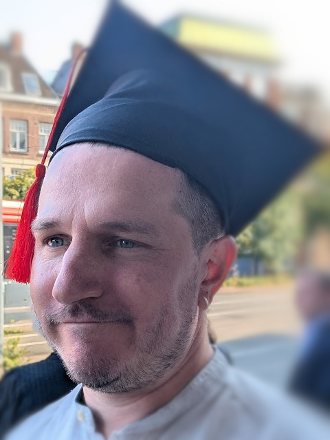
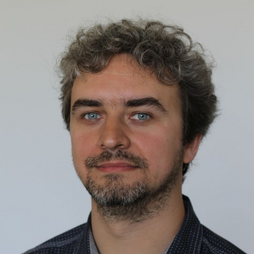

Keynote Speakers

Georgiana Caltais, University of Twente: A Comparative Perspective on Fault Trees and Actual Causality (see abstract)
Understanding why complex systems fail is a central concern across engineering and formal reasoning disciplines. Over time, distinct communities have developed fundamentally different tools for causal analysis. Fault Trees, rooted in reliability engineering, offer a top-down, structural view of failure propagation. In contrast, the Halpern-Pearl framework for Actual Causality stems from formal logic and artificial intelligence, providing a counterfactual and interventionist account of causation. Drawing from recent joint work, the talk aims to offer both a formal bridge between these traditions and a roadmap for integrating interventions, counterfactuals, and design-time reasoning into classical fault analysis frameworks.

Jérôme Leroux, Laboratoire Bordelais de Recherche en Informatique: Well Quasi Orders and Formal Verification
(see abstract)
A sequence of elements is said to be bad for a quasi-order if no element of the sequence is larger than or equal to a previous element. A quasi-order is said to be well if every bad sequence is finite. Well-quasi-orders (wqo for short) is a central notion for proving some decidability results. For instance, the termination of the Karp and Miller algorithm relies on a wqo. Intuitively, the proof of termination is obtained by observing that if the algorithm does not terminate, ultimately, it should compute an infinite bad sequence. Wqo can also be used for proving complexity results. By controlling with a function the way elements of a sequence can grow respectively to its position in the sequence, bounds on the maximal length of a bad sequence can be derived. As an example, the length of a bad sequence of vectors of natural numbers for the component-wise ordering is bounded by an Ackermann function for linearly controlled functions. Recently wqo was also used for explaining the data-structures computed by the KLM algorithm, an algorithm for deciding the reachability problem for Petri nets. Intuitively, the data-structures computed by the KLM algorithm are related to the classical notion of decomposition of downward-closed sets into ideals.
In this talk, we will survey past and recent results about wqo with a special focus on the reachability problem for Petri nets.

Rupak Majumdar, Max Planck Institute for Software Systems and Automated Reasoning Group, Amazon Web Services: Reasoning about Almost Sure Termination (see abstract)
Almost sure termination, or termination with probability one, is the core liveness property for randomized algorithms.
It is the probabilistic analogue of program termination.
We study proof rules for almost sure termination. While many proof rules for termination were proposed over the years, none were known to be both sound and complete.
This was in contrast to the non-probabilistic setting, for which we have known complete proof rules for many years.
We show a sound and complete proof rule for almost sure termination.
Using our proof rule, we study some classical randomized distributed algorithms and show how to construct termination proofs.

Wei-Ngan Chin, National University of Singapore: From Separation Logic to Staged Logic for Higher-Order Programs and Beyond (see abstract)
Higher-order functions and imperative states are language features supported by many mainstream languages. Their combination is expressive and useful, but complicates specification and reasoning, due to the use of yet-to-be-instantiated function parameters. One inherent limitation of existing specification mechanisms is its reliance on only two stages: an initial stage to denote the precondition at the start of the method and a final stage to capture the postcondition. Such two-stage specifications force abstract properties to be imposed on unknown function parameters, leading to less precise specifications for higher-order methods.
To overcome this limitation, we introduce a novel extension to Hoare logic that supports multiple stages for a call-by-value higher-order language with ML-like local references.
In this talk, we introduce our staged logic with its semantics, and show how it can be used to handle higher-order imperative programs, including those that arise from the use of delimited continuations (from algebraic effects).

Traian
Florin Șerbănuță
, University of Bucharest and Pi Squared Inc.: A Logic-Programming Approach to Arithmetic Circuit Design
–Deriving Zero-Knowledge Certificates from Mathematical Proofs–(see abstract)
Zero-knowledge (ZK) proof systems have received increasing attention in recent years, driven in large part by applications in blockchain and privacy-preserving computation. While many advances have focused on certifying the correctness of computations with partial information hidden from the verifier, recent efforts–such as zkUNSAT[1], zkSMT[2], and zkPi[3]–have begun to explore the use of ZK techniques to certify mathematical proofs themselves.
This talk introduces a new general-purpose language for expressing proofs and computations, grounded in principles from logic programming, and designed to enable the efficient construction of arithmetic circuits suitable for zero-knowledge proof systems. The language is implemented as part of PiSquared’s Proof-of-Proof framework and aims to bridge declarative proof development with low-level ZK-friendly circuit representations.
We illustrate the approach through a case study on certifying unsatisfiability refutations, yielding a tool comparable in functionality to zkUNSAT. The derivation methodology and circuit-generation process will be illustrated through concrete examples, highlighting both expressiveness and performance.
References
[1] Luo, N., Antonopoulos, T., Harris, W. R., Piskac, R., Tromer, E., & Wang, X. (2022, November). Proving UNSAT in Zero Knowledge. In Proceedings of the 2022 ACM SIGSAC Conference on Computer and Communications Security (pp. 2203-2217).
[2] Luick, D., Kolesar, J. C., Antonopoulos, T., Harris, W. R., Parker, J., Piskac, R., ... & Luo, N. (2024). zkSMT: A VM for Proving SMT Theorems in Zero Knowledge. In 33rd USENIX Security Symposium (USENIX Security 24) (pp. 3837-3845).
[3] Laufer, E., Ozdemir, A., & Boneh, D. (2024, December). zkPi: Proving Lean Theorems in Zero-Knowledge. In Proceedings of the 2024 on ACM SIGSAC Conference on Computer and Communications Security (pp. 4301-4315).
Tutorial Speaker

Alexandru Ipatiov, Continental Automotive Romania SRL: A Z3 based automated architecture-synthesis tool for automotive industry (see abstract)
The presentation reveals how Continental chose to pursue the endeavor of automated synthesis of correct-by-design in-vehicle system architectures. Aspects related to types of problems solved, use-cases, necessary models, annotations, typical constraints and optimization objectives are discussed for a realistic automotive system. Implementation alternatives are showcased and thoughts on upcoming challenges are shared with the audience.